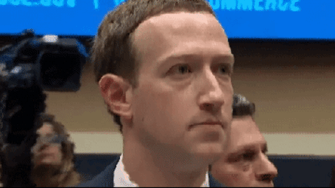

As curiosidades sobre a origem da Internet
postado em 13 julho
Você conseguiria imaginar uma realidade na qual a Internet ( WWW – World Wide Web) não existisse? Como seriam as comunicações, a busca por informações, o funcionamento de sistemas que mantém tecnologias consideradas vitais para espécie humana nos dias de hoje?
Um dos elementos mais importantes – e por que não, vitais – da vida contemporânea, a Internet tem seu próprio “feriado”, ou data celebratória.
O INTERNET DAY é comemorado no mesmo dia em que o primeiro e-mail da história foi trocado: 29 de outubro de 1969, através de uma conexão “online” entre a Universidade da Califórnia e o Instituto de Pesquisa de Stanford.
No mesmo ano, em março, “nasceu” a Internet como conhecemos hoje. Obra do cientista e engenheiro de computação britânico Tim Berners-Lee (o homem da foto que abre esta matéria), a World Wide Web – WWW, começou como um projeto de informação em rede, patenteado como projeto em desenvolvimento no dia 12 de março. Ele uniu um corpo de software a um conjunto de protocolos e convenções, além do uso de hipertexto e técnicas de multimídia.
O Pai de Todos
Berners-Lee trabalhava em um instituto de pesquisa nuclear mantido por países europeus, chamado CERN. O objetivo inicial do cientista era estabelecer contato entre os computadores do instituto.
O público só viria a ter acesso ao que se conhece hoje como internet em 1993, quando foi liberado o uso pela organização.
Origens
Na época da Guerra Fria, entre as décadas de 1960 e 1970, oficiais dos Estados Unidos desenvolveram um sistema de troca de informações, com receio de que mensagens confidenciais fossem interceptadas pela Rússia.
O protótipo da primeira rede de internet chamava-se Arpanet (Advanced Research Projects Agency Network).
CURIOSIDADES SOBRE A INTERNET
Tim Berners-Lee
- Nascido em 1955, Berners-Lee atua como professor nas mais prestigiadas universidades e institutos de pesquisa de Ciência da Computação no mundo: Ciência da a Universidade de Oxford e o Instituto de Tecnologia de Massachusetts (MIT), ambos nos Estados Unidos.
- Foi condecorado como cavaleiro (“Sir”), parte da ordem império britânico, em 2004, pela rainha Elizabeth II.
- Berners-Lee é o diretor de duas fundações criadas por ele: o World Wide Web Consortium (W3C) conselho de diretrizes e desenvolvimento da Internet, e o Web Science Research Initiative (WSRI). Ele também é o e presidente do Open Data Institute, fundado por ele.
A Rede ou a Net?
- Apesar de ambos os termos serem usados como sinônimos, a Internet e a Web não são a mesma coisa. A Internet foi criada antes, como um sistema que permite a conexão entre computadores. A viabilidade da World Wide Web demanda o uso da Internet, já que a WWW é uma rede que porta documentos de hipertexto – sua linguagem de programação básica – e informações, que só podem ser acessadas online, ou seja, via Internet.
- O Brasil não figura nem no top 50 da lista de países com melhor qualidade de conexão do mundo. Atualmente, detém a 89º posição no ranking. O primeiro posto é da Coréia do Sul. A primeira rede social do mundo a ser reconhecida como tal foi o Orkut, lançado em 2006. O Brasil era o país como o maior número de usuários.
- O país com mais pessoas acessando a Internet no mundo é a China. Os postos seguintes do ranking são do Estados Unidos, Índia, Japão e Brasil.
Era Uma Vez…

- Em 2004, Mark Zuckerberg, era um estudante de ciência da computação em Harvard, e criou um site muito parecido com o Tinder: FaceMash.A plataforma exibia fotos dos rostos de duas alunas ou dois alunos da universidade, lado a lado, para que os usuários escolhessem quem seria o mais “pegável”. Ele postou a novidade em um fórum interno de debate, e em 24 horas haviam cerca de 1200 inscritos. Por ter hackeado o banco de imagens dos perfis dos estudantes, Zuckerberg foi banido de usar a internet em Harvard, e obrigado a desativar o FaceMash. A empreitada, no entanto, foi usada como base para o desenvolvimento de seu projeto seguinte, o Facebook.
- GIF, que significa Graphic Internet Format, é um formato de imagem compactado, desenvolvido com o objetivo de diminuir o tempo de download e exibição das mesmas. Um vídeo atual do YouTube levaria cerca de 40 minutos de pré carregamento, para exibir dois minutos de imagens, nos modems e navegadores da época (1987). Segundo o criador, Steven Wilhite, a maneira correta de pronunciar GIF é “JIF”.
- O primeiro vídeo do YouTube foi publicado em 23 de abril de 2005, e era uma filmagem de um dos fundadores, Jawed Kim, durante uma visita ao zoológico de San Diego, nos Estados Unidos. O YouTube foi uma plataforma independente por quase um ano, até ser adquirido pelo Google por aproximadamente R$ 6 bilhões.
Fonte: Saraiva
Postagens recentes
Enquanto jogadores calejados, nós sempre quisemos que a inteligência artificial evoluísse a ponto de pensar como nós - tomar decisões.
Lei maisNo mesmo ano, em março, “nasceu” a Internet como conhecemos hoje. Obra do cientista e engenheiro de computação britânico Tim Berners-Lee.
Lei maisTodos os direitos reservados
Autor: Anthony Kildery
Orientador: Professor Carlos